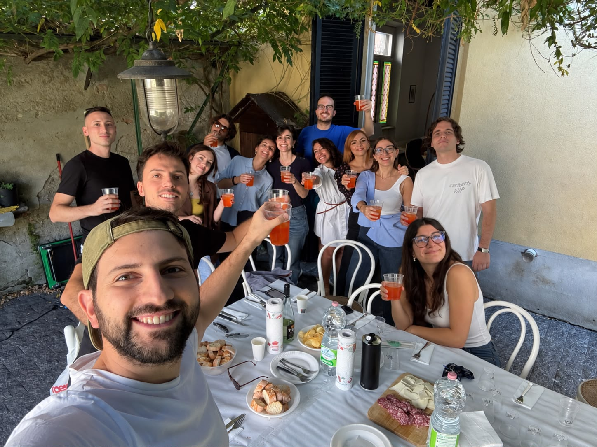
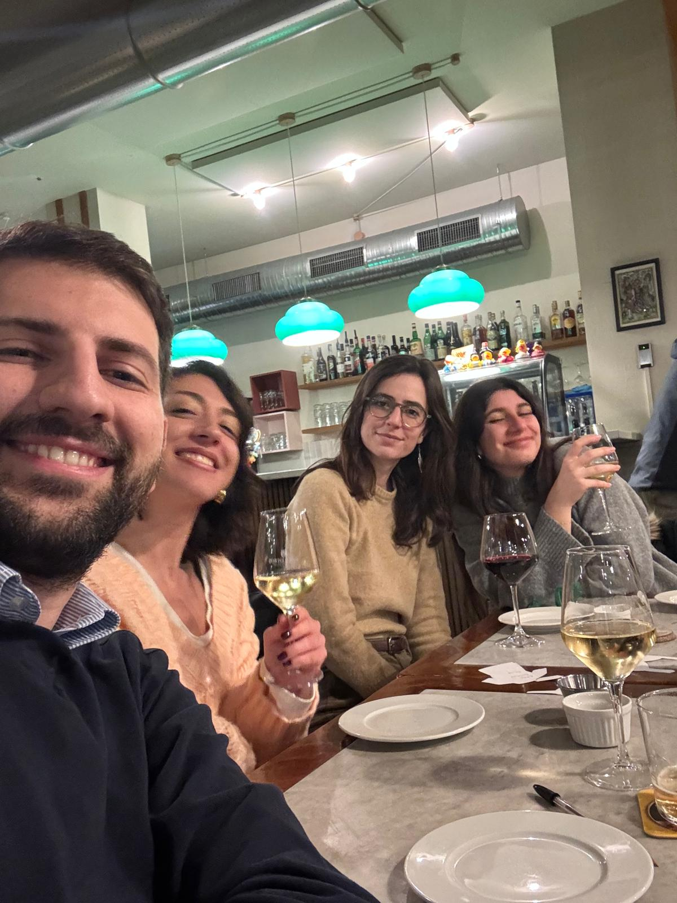
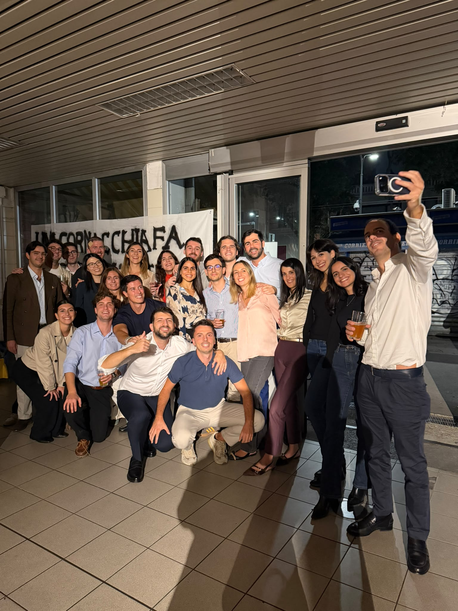

A maggio del 2022 ho iniziato a lavorare in RSM, a Milano. Due mesi prima avevo conseguito la laurea magistrale in Economia. Arrivavo con la fame di chi ha tanto da imparare e vuole trovare il proprio posto nel mondo del lavoro. Alle spalle lasciavo mesi complicati, fatti di sacrifici e delusioni, e un’esperienza amministrativa nella quale avevo investito tempo, energie e convinzioni.
Per raccontare questi quattro anni e mezzo, però, devo fare un passo indietro.
Nel 2016 sono diventato segretario dei Giovani Democratici di Altamura. Sono stati anni di battaglie, incontri, discussioni e iniziative, vissuti con la convinzione di poter contribuire al futuro della mia città. Credevo nelle idee e nella possibilità di portarle avanti insieme. Con quello spirito, nel 2018, ho scelto di candidarmi al Consiglio comunale.
L’esperienza amministrativa ha progressivamente messo alla prova quell’entusiasmo. Con il tempo, la distanza tra ciò in cui avevo creduto e quello che vivevo è diventata sempre più difficile da ignorare.
Faticavo a riconoscermi in un’amministrazione che percepivo frammentata, poco capace di confrontarsi e di trovare una direzione comune. Insieme ad altri consiglieri ho espresso il mio dissenso su metodi e scelte. Il confronto è diventato pubblico, ma per me la delusione andava oltre le divergenze politiche: coinvolgeva anni di impegno e la speranza di costruire qualcosa per Altamura.
Nel 2022 sentivo il bisogno di cambiare. La laurea appena conseguita e una proposta di lavoro mi hanno offerto una possibilità concreta. Ho deciso di coglierla, con la voglia di imparare un mestiere e cominciare una nuova fase della mia vita.
Milano per il lavoro. Monza per vivere.
A Monza, il mio primo punto di riferimento è stato l’Istituto Pavoniano Artigianelli, in via Magenta. Lì ho conosciuto i primi amici e ho cominciato a prendere confidenza con una vita diversa da quella che avevo lasciato. Dovevo ancora orientarmi, conoscere la città e trovare le mie abitudini. Intanto, giorno dopo giorno, quel posto cominciava a diventarmi familiare.
Quasi un anno dopo il mio arrivo ho conosciuto Grazia, anche lei a Monza per lavoro. Allora non avrei immaginato quanto sarebbe diventata importante per me. Ci siamo avvicinati e, con il tempo, mi sono reso conto di aver trovato una sorella: una persona con cui potevo essere me stesso e sulla quale sapevo di poter contare.
All’istituto ho incontrato anche Antonio, per tutti Pasticcino, e Antonio Barbera. Con loro sono nate amicizie sincere, cresciute condividendo le giornate. A un certo punto ho capito che quei rapporti sarebbero continuati anche quando non avremmo più abitato nello stesso posto. Erano diventati amici per la vita. Poi sono arrivate Marica e Raffa e, anche con loro, mi sono ritrovato a costruire un’amicizia sincera che non avevo previsto e che oggi conta tanto.
Da questi incontri ha cominciato a prendere forma il Branco. Quel nome è diventato il nostro modo di riconoscerci e di sentirci parte di un gruppo. Monza si è riempita di occasioni per stare insieme, di persone da cercare e di ricordi che oggi faccio fatica a separare dalla città stessa.

Quando ho lasciato l’Artigianelli, ho voluto continuare a coltivare quella quotidianità aprendo casa agli amici. Prima in via Maurice Ravel e poi in via Felice Cavallotti, mi piaceva ritrovarci per mangiare insieme, guardare un film e passare la serata in compagnia. Abitare per conto mio mi dava anche questa possibilità: avere uno spazio da condividere con le persone alle quali mi ero legato.
La Bat-caverna, come la chiamavamo, era per tutto il Branco. Volevo che gli altri si sentissero a proprio agio, che sapessero di poter venire e trovare un posto anche per loro. Quelle cene, i film e le chiacchiere hanno riempito entrambe le case e le hanno rese una parte importante della mia vita a Monza.

Nel frattempo, anche al lavoro qualcosa stava cambiando. Il primo periodo mi era sembrato piuttosto monotono; poi, con l’unione delle sedi e l’arrivo di Lucia e Maria, le giornate hanno preso un altro ritmo. Abbiamo cominciato a conoscerci meglio, a prenderci più confidenza e a ridere insieme. Poco alla volta, il rapporto è cresciuto oltre le attività che condividevamo alla scrivania e andare in studio ha significato sempre di più ritrovare persone con cui stavo bene.

A tutto questo si sono aggiunti il gruppo del calcetto e le piccole conquiste professionali. Mentre costruivo amicizie e abitudini, imparavo anche a lavorare, ad affrontare le difficoltà e a cavarmela con maggiore autonomia. Nell’ottobre del 2025 è arrivata l’abilitazione da dottore commercialista, un traguardo al quale tenevo molto e che aveva richiesto tempo, impegno e perseveranza.
Ora che mi fermo a ripensarci, mi accorgo di quanto abbiano contato anche i momenti che, mentre li vivevo, mi sembravano normali. Una serata insieme, una persona conosciuta quasi per caso, una difficoltà superata, un’attività che finalmente riuscivo a gestire da solo. Attraverso queste cose, senza rendermene del tutto conto, mi sono costruito una vita.
Nell’ottobre del 2026 ho scelto di chiudere questo capitolo. Ho accettato una proposta professionale a Palo del Colle e ho deciso di tornare a vivere ad Altamura, per cominciare una quotidianità insieme a Rosa.
In tutti questi anni Rosa mi è stata vicina e mi ha sostenuto, anche quando la distanza rendeva tutto più complicato. Tornare significa poter condividere con lei le giornate, le abitudini e i progetti, dopo aver dovuto organizzare così tanto del nostro tempo intorno alle partenze e ai ritorni. È una parte importante della vita che desidero costruire adesso.

Questo, naturalmente, non rende facile lasciare Monza e Milano. Mi dispiace allontanarmi dalle persone che ho incontrato, dal lavoro nel quale sono cresciuto e da una quotidianità che ormai sentivo mia. Mi mancherà la possibilità di organizzare una cena a casa, di ritrovarci per un film o di vedere ogni giorno in studio persone con cui avevo imparato a condividere molto. Quando sono arrivato, nessuna di loro faceva parte della mia vita. Oggi so quanto mi mancherà averle vicine.
Nel maggio del 2022 sapevo dove sarei andato a lavorare, ma non potevo sapere chi avrei incontrato e quanto mi sarei legato a quelle persone. L’ho scoperto vivendo lì, un giorno alla volta, e adesso sento il bisogno di raccontarlo.
Questo spazio nasce anche per dare un posto a quelle storie: alle amicizie, ai traguardi, ai momenti difficili e alle scelte che mi hanno portato fin qui. Comincio a scriverle mentre torno a casa, con il desiderio di conservare questi ricordi e continuare a coltivare i rapporti che hanno reso così importanti i miei anni a Monza e a Milano.